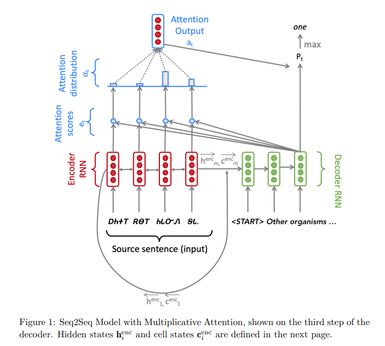
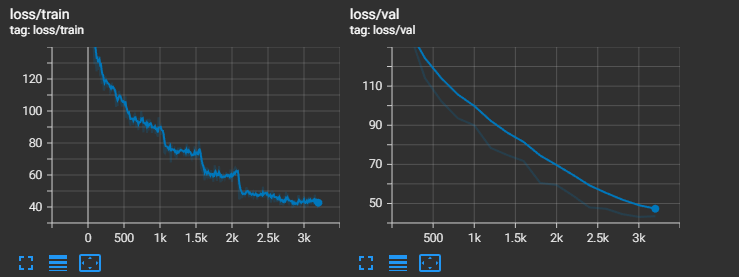
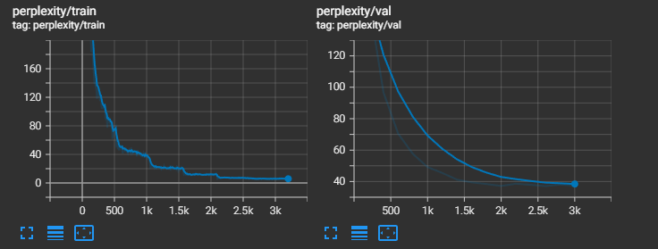

Assignment 4
Handout: CS 224n: Assignment #4
1. Neural Machine Translation with RNNs
Implementation: Assignment 4 Code
In the first task, a sequence-to-sequence(Seq2Seq) network with attention is built as a Neural Translation (NMT) system for Cherokee to English translation.

Training Curves:

(g). generate_sent_masks() functions in nmt_model.py
step() function in nmt_model.py sets \(e_t\) to -inf where env_masks has 1, so the attention weights will be zero fater softmax function for "pad" embeddings. Only the weights for real tokens in a sequence will be taken into consideration this way.
# Set e_t to -inf where enc_masks has 1
if enc_masks is not None:
e_t.data.masked_fill_(enc_masks.bool(), -float('inf'))
(h). test the model
The result is:Decoding: 100%|██████████████████████████████████████████████████████████████████████████████████████████████████████| 1000/1000 [00:56<00:00, 17.63it/s]
Corpus BLEU: 12.784050459913443
(i). Different Attention
dot product attention: \(\mathbf{e}_{t,i} = \mathbf{s}^{T}_{t}\mathbf{h}_{i}\)
multiplicative attention: \(\mathbf{e}_{t,i} = \mathbf{s}^{T}_{t}\mathbf{W}\mathbf{h}_{i}\)
additive attention: \(\mathbf{e}_{t,i} = \mathbf{v}^{T}tanh(\mathbf{W}_{1}\mathbf{h}_{i}+ \mathbf{W}_{2}\mathbf{s}_{t})\)
1. dot product attention compared to multiplicative attention
| advantage | disadvantage |
|---|---|
| Computing faster | less expressive |
2. additive attention compared to multiplicative attention
| advantage | disadvantage |
|---|---|
| More versatile | heavy computing |
2. Analyzing NMT Systems
(a). Cherokee is a ploysynthetic language, and it will make the word vocabulary very large. Modeling at a subword-level is easier.
(b). The transliterated Cherokee text might be more alignment with morphemic convention.
(c). Multilingual NMT, with the inductive bias that "the learning signal from one language should benefit the quality of translation to other languages", is a potential remedy.
(d).
i. Wrong pronouns. Pronoun construction is insufficient. Adding more layers to final vocabulary projection.
ii. repeated words. Putting overly high attention on adjective. Changing the attention mechanism might help.
iii. Less expressive words. Low representational capacity of the model. Adding more layers to the projection layers of the encoder and decoder.
(f). Computing the BLEU score
References:
[1]. BLEU: a Method for Automatic Evaluation of Machine Translation
[2]. NEURAL MACHINE TRANSLATION BY JOINTLY LEARNING TO ALIGN AND TRANSLATE
[3]. Attention and Augmented Recurrent Neural Networks